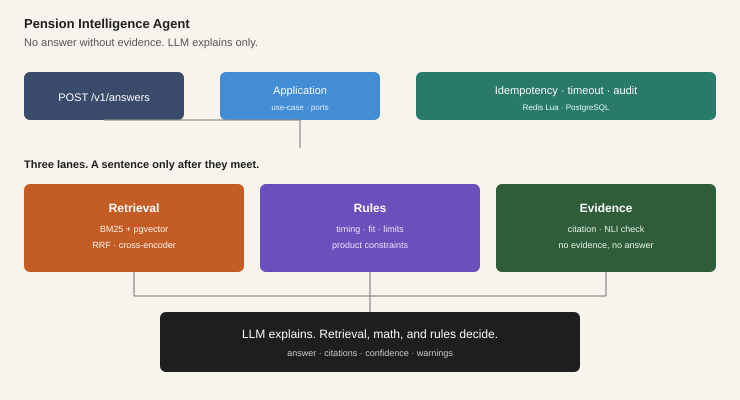

Pension Intelligence Agent
A pension Q&A API that handles source documents, timing rules, and product-fit conditions separately. If retrieval, calculation, rules, or verification are missing, the answer is withheld. The LLM only polishes the wording.

The main contract is POST /v1/answers. Responses include answer, citations, confidence, warnings, products, and verification.